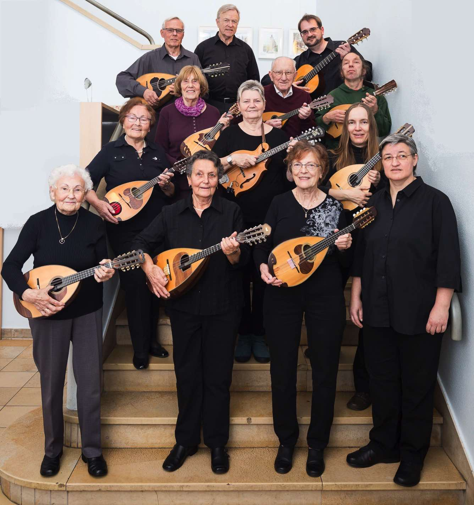

Bilder
Im Jahr 1922 (Frauen waren erst seit den 30iger Jahren dabei):

Das Orchester im Jahr 1992:
Zum 100sten Jubiläum im Jahr 2012:


Mitwirkung bei der Informatik-Absolventenfeier 2013 der Ostfalia Hochschule:
Mitwirkung bei John Cage's Musicircus auf dem Burgplatz im Sommer 2013:

(Auf dieser Seite ist ein Video des Musicircus. Wir sind in der 5.ten Minute kurz zu sehen. Das war vermutlich das modernste und ungewöhnlichste Konzert, an dem wir je teilgenommen haben oder teilnehmen werden!)
Verleihung der PRO MUSICA-Plakette im Jahr 2018:


(letztes Foto: Björn Küssner)
Gartenkonzert unter Corona-Bedingungen im Jahr 2020:
Beim Regionalen Musikfest in Wolfsburg, 2024: